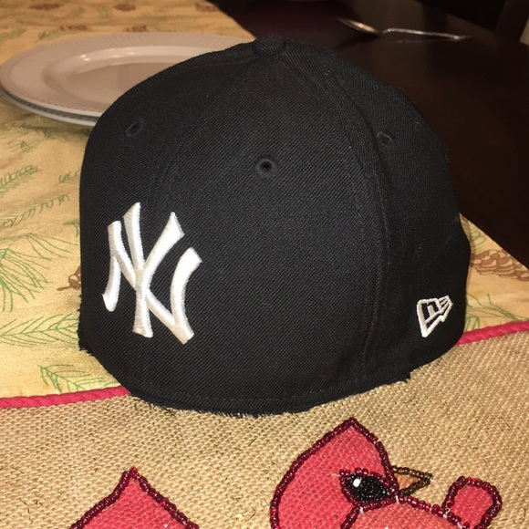

Yankee With No Brim

Description
The homestyle yankee with no brim is a newcomer to the cooking scene, but is already beloved by many,
especially those who enjoy reviving decrepit memes that were never really that funny to begin with.
Ingredients
- Exactly 1.2 yankees
- A disdain for brims, and, all the more disdain for yankees with brims
- Footlong machete
- Using the machete, remove exactly 0.2 yankees from the yankal mass
- Setting aside the newly shorn yankee, place the 0.2 yankees that were just removed in a pile to later be repurposed
- Using the machete, carefully slice the brim section cleanly off of the yankee (ignore its pleas for mercy)
- Enjoy!